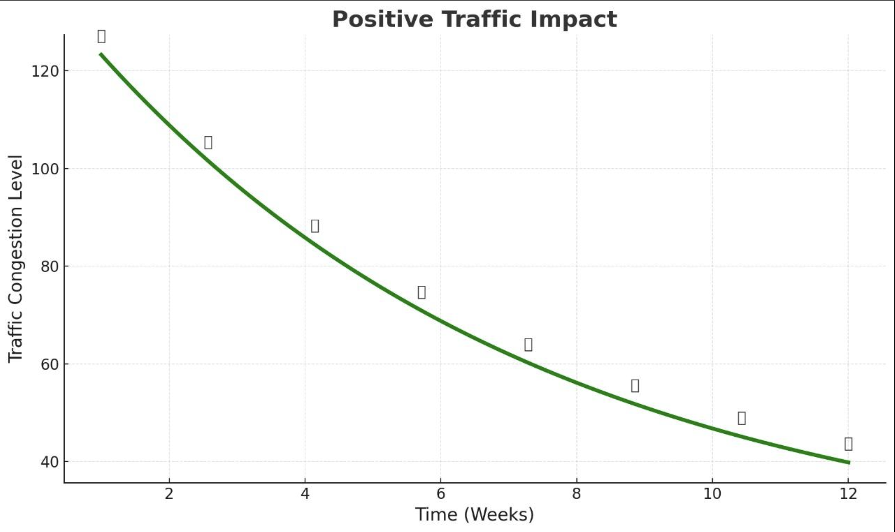

UrbanPulse
Sign in to access the future of traffic management.
Sign in to access the future of traffic management.
AI-powered traffic management to reduce congestion, lower emissions, and create smarter, more efficient cities.
Every day, millions of hours are lost to traffic congestion. This doesn't just waste time; it increases pollution and costs our economies billions. Traditional traffic systems can't keep up with dynamic urban demand.


UrbanPulse uses computer vision to analyze live video feeds from intersections. It accurately counts vehicles, detects traffic density, and intelligently allocates green light durations to optimize flow in real-time.
Our deployments have shown significant, positive results, making commutes faster, safer, and greener.
30%
20%
15%


Monitor live feeds, view real-time vehicle counts, and analyze traffic patterns through our intuitive and powerful dashboard. Take control and make data-driven decisions for your city's infrastructure.
View The Dashboard